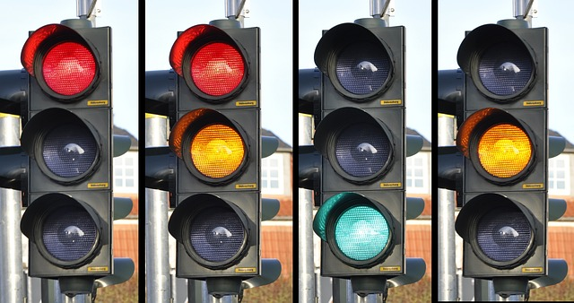
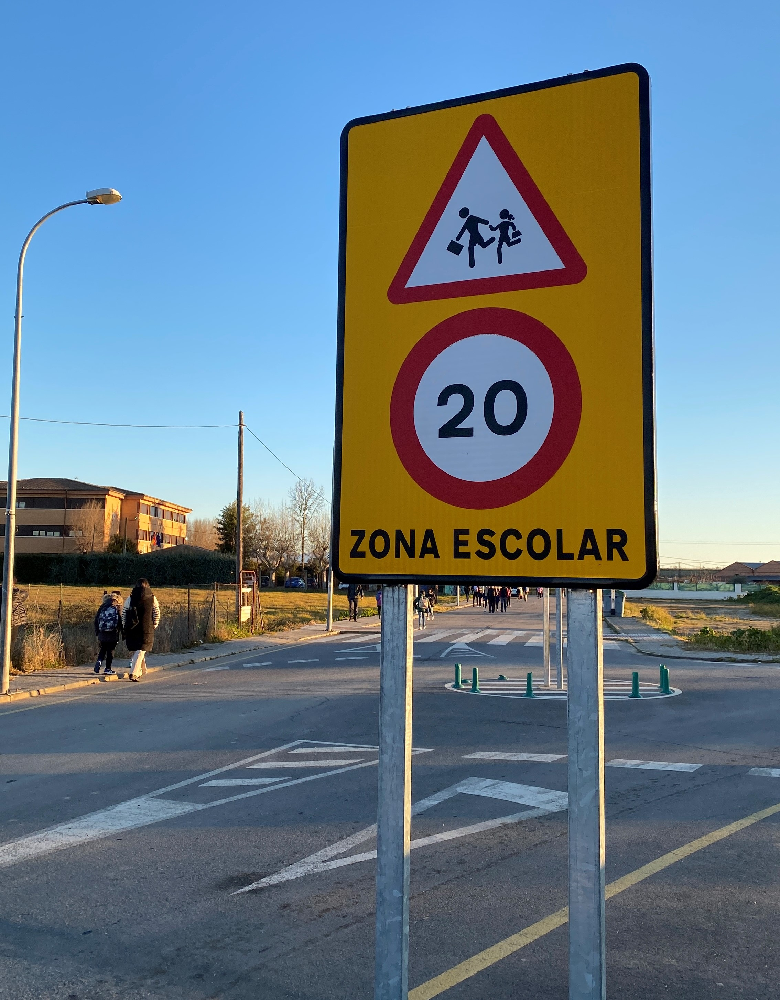
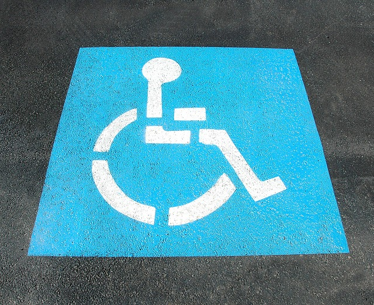
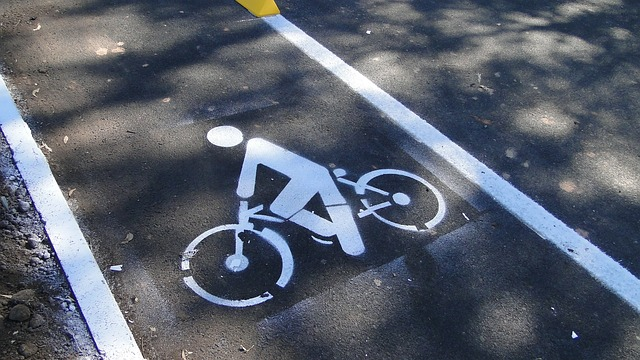

Las señales son símbolos que sirven para darnos información cuando las vemos. Cuando vemos las señales de tráfico, es como si nos "hablasen" sin utilizar las palabras, por eso es muy importante conocer lo que quieren decirnos.
Algunas de las podemos ver en nuestro pueblo son: (*) Pulsar en cada una para ver la descripción.
Semáforo.
Los semáforos son señales luminosas que indican quién debe pasar o detenerse, en el caso de un peatón o en el caso de ser los conductores de vehículos.
Rojo: Parar Verde: Pasar Amarilla: Precaución (vehículos)

Semáforos(Licencia Pixabay)
Paso de peatones.
Zona de la calzada habilitada para que lo peatones puedan cruzar, donde los conductores deben ceder el paso a los peatones.
Paso de peatones(Licencia Pixabay)
Peligro Colegios.
Esta señal nos indica que es una zona frecuentada por niños, colegios, zonas de juego, etc...
Imagen Propia
Estacionamiento personas con Discapacidad.
Esta señal, indica que la zona está reservada para que puedan aparcar su vehículo las personas que presenten alguna discapacidad.

Estacionamiento para discapacitados(Licencia Pixabay)
Carril Bici.
Esta señal nos indica que este carril solo pueden usarlos las bicicletas.

Carril bici(Licencia Pixabay)
¡Atención, atención!
¿Practicamos? Con el siguiente juego podremos repasar divirtiéndonos mientras entrenamos nuestra atención. Podemos pulsar el botón abajo a la derecha para verlo a pantalla completa. O si lo preferimos, jugar en otra ventana, pulsando aquí.